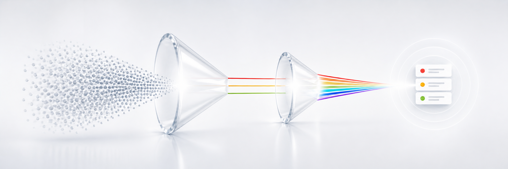

PRISM
PIPELINE RESEARCH
INTELLIGENCE SYSTEM
Your AI-Powered Hub for Pipeline Search & Evaluation.
THE PRISM METHOD
From Noise to Focus.
PRISM analyzes thousands of pipelines through seven signals, narrowing them down to the ones that deserve your attention.
